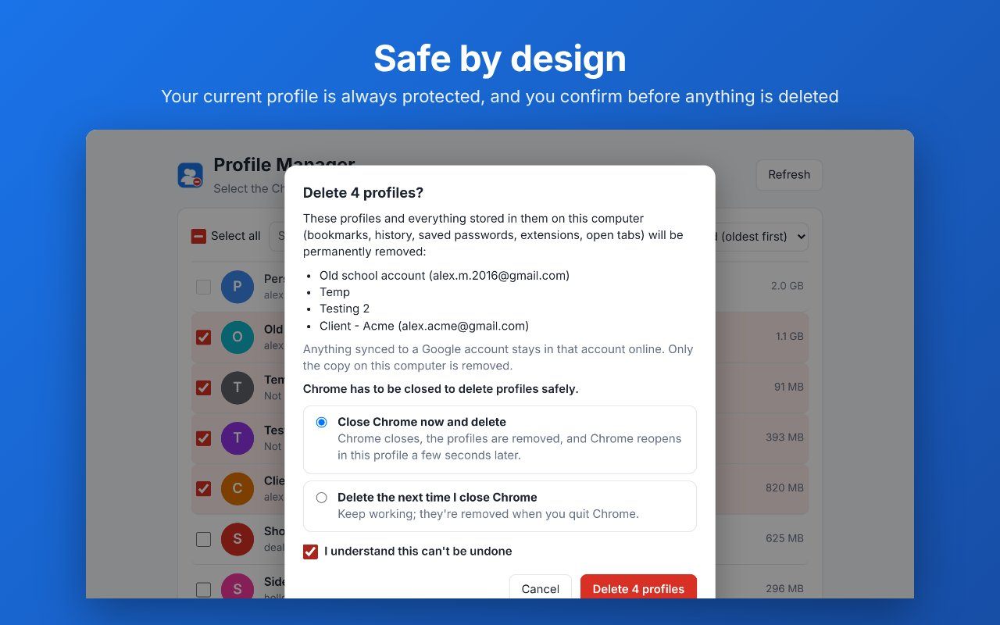
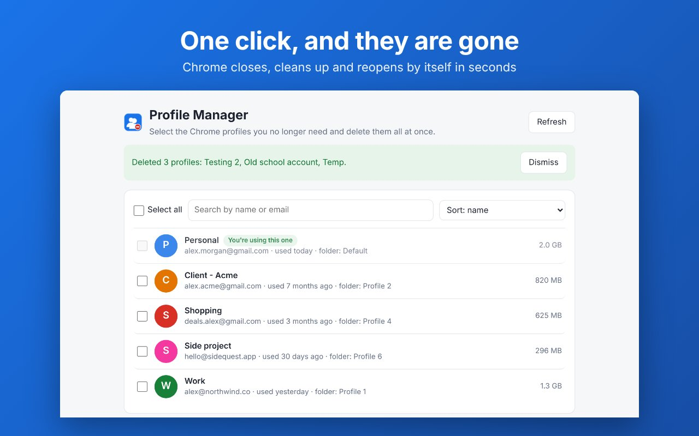

Why people use Profile Manager
Profiles pile up from old jobs, clients, test accounts and shared computers. Cleaning them up in Chrome's own settings takes forever.
Bulk delete
Select 2 or 20 profiles and remove them together, instead of opening each one.
Know what you're deleting
See each profile's name, Google account email, when it was last used and how much disk space it takes.
Safe by design
The profile you're using can never be deleted, and you always confirm first.
Free up disk space
Old profiles can take gigabytes. Sort by size or by last used to find them fast.
How to delete multiple Chrome profiles at once
It takes about a minute the first time.
Add the extension
Install Profile Manager from the Chrome Web Store.
Install the free helper
One small download, then click OK. No admin rights needed.
Select and delete
Tick the profiles you don't need, click Delete selected and confirm. Chrome reopens in seconds.


Questions
How do I delete multiple Chrome profiles at once?
Chrome only lets you remove profiles one at a time. With Profile Manager, open its page, tick every profile you want to remove, click Delete selected and confirm. Chrome closes, the profiles are removed, and Chrome reopens.
Can I delete the Chrome profile I'm using?
No. Profile Manager always protects the profile you're currently using so you can't delete it by accident.
Does deleting a Chrome profile delete my Google account?
No. Only the copy on your computer is removed. Anything synced to your Google account stays in that account.
Where are Chrome profiles stored?
On Windows in %LOCALAPPDATA%\Google\Chrome\User Data, and on Mac in ~/Library/Application Support/Google/Chrome. Each profile is a folder such as Default, Profile 1 or Profile 2. Profile Manager shows which folder belongs to which profile.
Why does it need a helper app?
Chrome extensions aren't allowed to delete files on your computer. A small free helper app does the deleting when you ask. It runs only on your computer and never uploads anything. Privacy policy.
How much does it cost?
Your first 3 profile deletions are free. After that, a one-time $4.99 unlocks unlimited bulk deleting forever. No subscription.